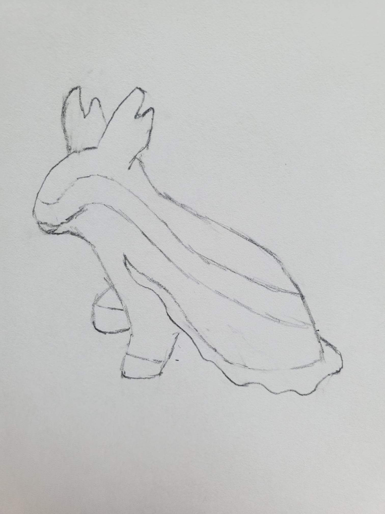
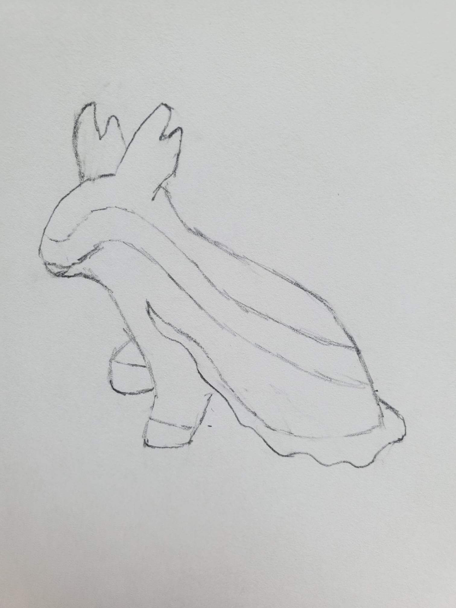

The main page of the site will focus mostly on me as a creator and how players can support the community I'm building. It will explain my passion for creating, and how I gather ideas day by day until inspiration strikes, and something new emerges from the primordial soup. This page will need to discuss the fact that I can't manage these servers alone, and that I have friends who help maintain them on a volunteer basis. Indeed, I don't want to manage it alone, because that takes all of the fun out of it: I want my players to share ownership of what we make together. Then it should elaborate on the kind of community I am trying to create, and values and standards of conduct I expect my community to hold.

 


Support The Community
It should provide instructions for anyone interested in similarly volunteering on how to contact us and get involved. It should also discuss how important community creators are, and the rights status of content created by the community. Then it will give a brief introduction for each of the discord server games, and link people to their respective pages and servers.
Contact Us
You can contact me at taloir.twl@gmail.com
Metamon
For the Metamon page, it will start with a description of the game premise, and an explanation that the freedom of creativity to be involved in designing your own characters and to roleplay their actions and relationships with each other is what makes the game special.
Learn More About MetamonThe IHU
The IHU page will need to start with an explanation of what roleplay games are for those who dont know, and then an explanation that this isn't like most roleplay people are familiar with, as it has almost no real rules. Then it needs to reinforce community standards about roleplay conduct and maintaining internal consistency.
Learn More About The IHU